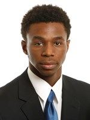
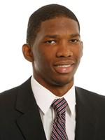
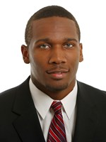
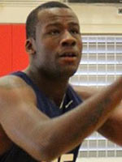
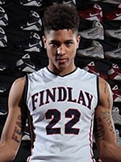
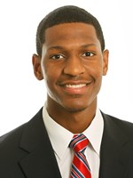
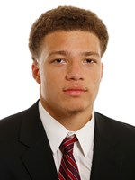

Days Until Late Night
October 3, 2014 @ 6:30pm
2014-15 Roster
|  | Andrew Wiggins Undecided (Probable NBA) |
|  | Joel Embiid Undecided (So) |
|  | Wayne Selden, Jr. Returning (So) Source |
 |
Perry Ellis Undecided (Jr) |
|  | Cliff Alexander Signed (Fr) Source |
|  | Kelly Paul Oubre Jr. Signed (Fr) Source |
| Hunter Mickelson Incoming Transfer (Jr) Source | |
| Naadir Tharpe Returning (Sr) | |
| Christian Garrett Returning (Sr) | |
| Jamari Traylor Returning (Jr) | |
|  | Andrew White III Returning (Jr) |
| Evan Manning Returning (Jr) | |
| Tyler Self Returning (Jr) | |
| Frank Mason Returning (So) | |
|  | Brannen Greene Returning (So) |
| Conner Frankamp Returning (So) | |
 |
Landen Lucas Returning (So) |